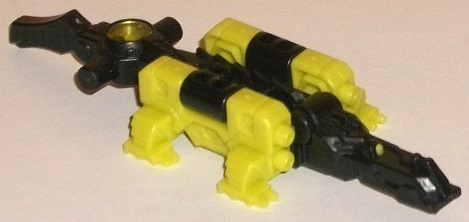
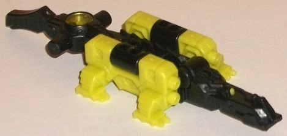
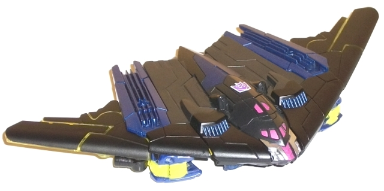
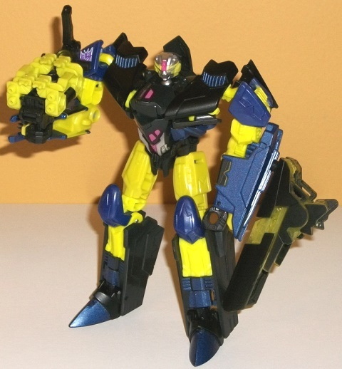

Allegiance : Decepticon
Size : Mini-Con
Difficulty of Transformation : Very Easy
Color Scheme : Black, light pea green, and some transparent light pea green
Individual Rating : 5.5
 Gatoraider
Gatoraider

Allegiance
: Decepticon
Size
: Mini-Con
Difficulty of Transformation
: Very
Easy
Color Scheme
: Black, light pea green,
and some transparent light pea green
Individual Rating
: 5.5
Like many of the "partners"
for the Subscription Service figures, Gatoraider is a redeco, but of an
Arms Micron toy that was previously released only in Japan-- Dai-- so this
review is basically as if he was a new toy. In his main beast mode, Gatoraider
is-- obviously-- a mechanical alligator, and is an update of Krok's original
Action Master partner of the same name. His proportions in this mode are
fairly solid, with an appropriate long, flat body and legs that tend to
poke out of the side. The only oddities in this respect are that the sides
of the main body stick out a bit too much in addition to the legs, but
this is a small complaint. Like the original, this version of the character
has light pea green used for the legs in addition to the black that otherwise
dominates his color scheme. It's definitely an appropriately gator-y scheme,
and fits in with Krok quite well. There's also just a dot of pea green
paint on the solo eye on the head, and a circular piece on his tail (which
initially had a spark crystal in it) is a transparent version of the same
shade of green. I would've appreciated a bit of red paint or something
on the pea green, but otherwise it's an okay scheme. The mold detailing
is quite detailed on the head, with a long jaw, a single eye, and even
little guns behind the eye that are quite apparent, though Gatoraider fits
into the profile of most other Arms Micron toys on the rest of his body
by having fairly minimal and/or simplistic detailing. (That said, the little
molded-in bolts on the side are a nice touch.) For articulation in this
mode, Gatoraider can move up-and-down at the head as well as at two places
along the tail-- not particularly articulated, but then again few Arms
Micron toys are.
To transform Gatoraider
into his weapon mode (see picture of Krok below), you fold his head and
arms in towards the main body, flip out a peg along the bottom for a larger
TF to hold him, and the tail just sorta... scrunches up a little. Yeah,
the tail is a really obvious extra and definitely my biggest issue with
this mode, especially since it goes so far back it can interfere with some
toys holding him while still bending their arms at the elbow. The weapon
mode is definitely meant to be a handheld missile launcher, with missile
pack-like details on the front (again, I wish they were painted). Other
than the tail, it's a fairly solid mode. As with most Arms Micron toys,
Gatoraider has a TON of 5mm ports and pegs to combine him with other compatible
toys if you so choose. As far as pegs, there's one on the bottom side of
this mode, as well as one on each side of his tail. There's also plenty
of ports-- one on the bottom side of his tail, two on each side of this
mode (hidden in gator mode as they're on the interior of the pea green
pieces), and two on the bottom of the head.
 Krok
Krok


Allegiance
: Decepticon
Size
: Deluxe (comes packaged with
Nightracer
w/ Shakar
)
Difficulty of Transformation
: Easy
Color Scheme
: Black, light pea green,
dark milky purple, dark metallic purple, and some transparent light pea
green, light pinkish red, and silver
Individual Rating
: 8.8
(NOTE: Because this is a repaint, this is not a full-blown review. This mainly covers any changes made to the mold and the color scheme, and merely compares it to Generations IDW "Stealth Bomber" Megatron. For a review on the mold itself, read the review of "Stealth Bomber" Megatron here .)
The original Krok was
an Action Master, but like most Action Masters he LOOKED like he had an
alt mode-- some sort of aircraft, so making him into a stealth bomber makes
perfect sense! In vehicle mode Krok is almost entirely black, with a bit
of metallic dark purple. I do wish that the purple was a bit lighter for
better contrast, but it's still a pretty decent shade. There's just a touch
of pea green visible in this mode from the transparent parts on the underside
of the wings, but the toy's still largely black and purple. I wish some
green paint apps had been added to this mode to help differentiate Krok
a little more from IDW Stealth Bomber Megatron, who also had purple and
black as his main colors in vehicle mode. In typical late G1/early G2 fashion,
Krok does have one fairly loud color, though on him it's pretty minor--
the windows for his stealth bomber mode are a light pinkish shade of red.
This is in keeping with his original version and just a bit loud, but even
if you're not a fan of loud colors, in this small of an amount it doesn't
overwhelm the senses by any means. In robot mode Krok's colors get considerably
more broken up and interesting, with a good amount of pea green on his
upper and middle legs and upper arms. (Despite what the picture shows above,
the plastic of his upper legs and his other green plastic is not noticeably
different-- chalk it up to lighting conditions, I guess.) The transparent
pea green also becomes more obvious on his arm-gun. The dark purple isn't
just paint, but plastic as well, and covers most of his arms as well as
his kneecaps and feet. The black is mostly centered on his torso, but there's
some silver and pinkish red to break even that up some. All in all it's
a great, solid color scheme that is fairly original, and the green in particular
really makes the toy (and makes his name more suiting).
Krok has a new headsculpt,
pretty much a direct update of his original Action Master head but smaller
in proportion to his body-- not just for space's sake, but to fit more
typically Transformer-y proportions (his Action Master toy did have a relatively
big head for a TF). All of the necessary sculpting details are there for
his fairly unique, round-yet-detailed head, with a good amount of silver
paint to highlight these details and a bit of pinkish red on the forehead.
TFSS Krok & Gatoraider
is a great duo, and one of my favorite releases from TFSS 3.0. Krok is
a solid mold with a nice, unique color scheme that does an excellent job
of "updating" an Action Master with an alt mode, and Gatoraider-- though
not the best Arms Micron mold-- is a pretty nice update and fits as a nice
partner figure for Krok. My only issue is that Krok's alt mode is a bit
too similar to IDW Stealth Bomber Megatron's in terms of colors. An easy
recommendation if you have the budget for TFSS figures (and yes, I'd recommend
this over the Titans Return version).
Reviews by Beastbot